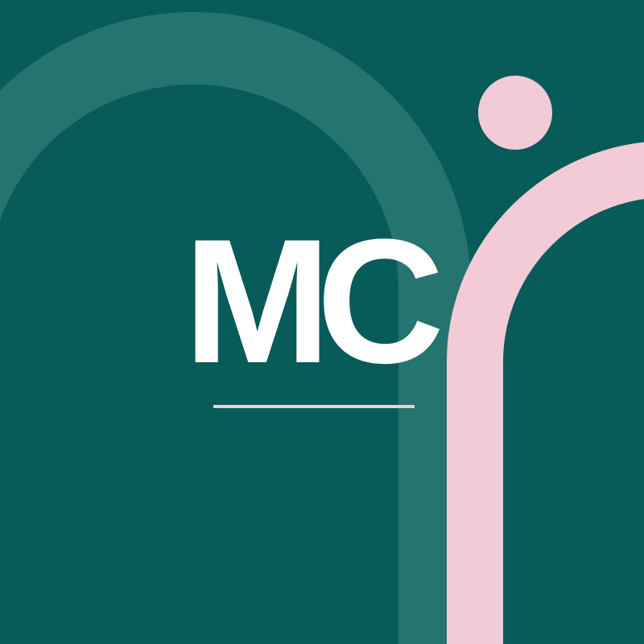
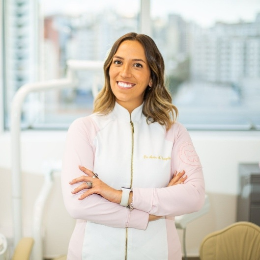

Odontologia
Graduação pela PUC Minas, concluída em 14 de dezembro.

Odontologia · Santa Tereza, BH
Saúde bucal, da gengiva ao cuidado de todos os dias.
Cirurgiã-dentista. Saúde gengival, DTM, bruxismo e prevenção em Belo Horizonte.
Cuidados para você
Sinais que merecem conversa
Sangramento, retração e saúde gengival são assuntos da avaliação periodontal.
Conheça as consultas e converse sobre a necessidade de acompanhamento.
Avaliação de adultos e prevenção, mesmo quando a dúvida não é um procedimento.
Da primeira conversa ao acompanhamento
Formação e trajetória
Graduação pela PUC Minas, concluída em 14 de dezembro.
Pós-graduação lato sensu pela PUC Minas, concluída em 25 de fevereiro. Carga horária de 860 horas.
Inauguração no começo do ano, no bairro escolhido por Marina.

O cuidado tem endereço
“Como moradora de Santa Tereza e apaixonada pelo bairro, não poderia escolher localização melhor.”— Marina Campolina ↗Conheça a trajetória
Além da primeira avaliação
Limpeza, remoção de tártaro e manutenção periodontal.
Restauração, hipersensibilidade dentinária e cuidados com o mau hálito.
Clareamento e avaliação para cirurgia de siso. Cada indicação é discutida em consulta.
Santa Tereza · Belo Horizonte/MG
CEP 31010-560
Dúvidas frequentes
Converse com o consultório sobre a avaliação odontológica de adultos. Não é preciso escolher um procedimento antes da consulta.
São cuidados distintos. A avaliação define a indicação e a frequência de acompanhamento.
Não. A placa de mordida é um recurso cuja indicação depende da avaliação individual.
Não. Você informa uma preferência; a recepção confirma manualmente o dia e a hora.
Vamos conversar?
Indique sua preferência para preparar a mensagem. A recepção confirma o atendimento; nenhuma vaga é reservada aqui.
Outros canais de contato ↗Santa Tereza · Belo Horizonte
Converse com o consultório sobre sua consulta e confirme dia e hora antes da visita.
Prévia feita pelo Doutor Sob Medida
Textos, fotos, cores e páginas: eu ajusto pelo WhatsApp até ficar do seu jeito.
Sem mensalidade. Domínio .com.br no seu nome, com o 1º ano incluído, e hospedagem.
No seu endereço, por exemplo marinacampolinabh.com.br. A disponibilidade eu confiro com você.
JMJoão Mateus · Doutor Sob Medida · ver as condições